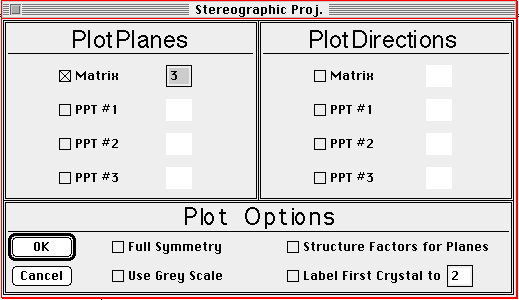

Distributed By: Virtual Labs
Definition Dialog Box
PATH...{Stereographic Projection Object}:Function Menu:Re-Define...

Stereographic Projection Definition;
This dialog allows the definition of a stereographic projection. Plane or
direction poles may be plotted for the matrix and three precipitates. The
absolute value for the maximum index for each crystal / pole pair is specified.
In addition, automatic labeling of the poles of the first crystal may be
specified to a given order pole. Further, the pole size may be automatically
varied as a function of the structure factor of the given pole.
Author: J.ames T.
Stanley
 Desktop
Manual:Dialog Boxes
Desktop
Manual:Dialog Boxes
Distributed By: Virtual Labs
Last Updated:1/12/96 Sat, Apr 27, 1996